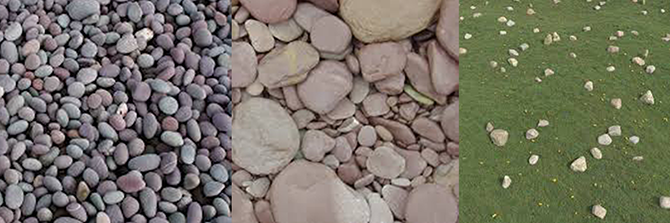
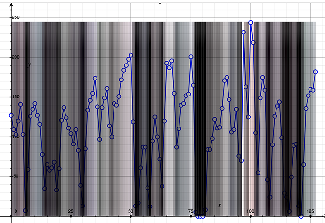

A fast introduction to Fourier transform
The idea of the Fourier Transform is that as mentioned before, a signal composed of real data can be decomposed into a series of frequencies. To begin with we will use a 1D function such as a sound wave but later we will show how to extend the method to 2D functions such as images. Before we get to that, let’s try to understand the idea of “decomposing a signal into frequencies” by intuition. Interestingly enough, it is easier to get an intuition of this concept by looking at images rather than using sound waves. In the image below we have three kind of rock patterns.
In the left image we can see that the size of the pebble is extremely regular and that the pebbles are generally nicely spread across the image. If we were to translate this into frequencies we would say that generally the stones have the same frequency and that because we can only see pebbles in the image and nothing else, pebbles have maximum amplitude. In the center image, we can see that this time, pebbles have different sizes. Translated to the frequency world, that means that very likely this image is composed of different frequencies one for each pebble size, for example large, middle and small.
Finally, on the right, we have pebbles or rocks too and they have the same size but this time there are few in the image. Their frequency should thus be rather uniform but they amplitude should be much lower than in the first example, since they don’t appear as often.
The Fourier transform will describe your image in terms of “what frequencies the elements making up the image have” and “what amplitude they have” which to some extent represents how often elements of a given frequency appear in the image. First image, a single frequency with a large amplitude is represented, second image, many frequencies with rather similar amplitudes are represented whereas in the last image, we have a unique frequency (when it comes to the rock) with a rather low amplitude. You can see a Fourier transform as a decomposition of the signal in terms of frequency and amplitude.

Figure 1: the red line indicates the data that we will be using for our exercise.
Let’s now work on a concrete example. You need to know a few things about the Fourier transform. In this lesson, we will work with “discrete values” (or samples). In the particular case of a sound wave this will be the values (or samples) of the signal at each time step. In the case of an image row for example (which is a 1D signal), these are the brightness values of each individual pixels making up that row. Let’s verify our intuition with regards to our chosen set of image and do the following. Each image is 128 pixel wide. To start with, we will be using the image on the left and use the row in the middle of the image to get some discrete data (using the red channel). The image is stored in the PPM format which is a format you can read (we have explained how to do this on Scratchapixel many times). Let’s do it and display the resulting values.
Now that we have some data, let’s apply the “Discrete” Fourier transform (since it will apply to discrete data, the 128 pixel values forming our signal) to transform it from “spatial” domain (each value in the signal corresponds to a given pixel position in the image’s row, thus it is indeed a function of space) into frequency domain.
This is where we start doing some maths. The Discrete Fourier Transform equation looks like this:
$$ f(k) = \sum_{n=0}^{N-1} f(n) e^{-\dfrac{i 2\pi k n}{N}} $$The variable \( f(k) \) that we compute on the left is what we call the coefficient of the Fourier signal’s decomposition. In our particular case, the signal contains 128 values, therefore there will be 128 of these Fourier coefficients. Note that this not mandatory. We can “decompose” the input signal using less coefficients than the number of values contained in the input signal, but if you use less coefficients, you won’t be able to reconstruct a signal perfectly identical to the input signal later on. The equation says that for each one of these coefficients, we need to sum up all of the input function’s values multiplied by some term that includes an exponential function. The magic lies within that exponential function and more precisely the exponent of the Eleur's number \( e \). In there lies the letter ‘i’ which in fact means that we are not dealing with ordinary numbers so to speak but with what we call imaginary numbers. For now, don't try to make sense of what these strange numbers are. It is enough for you to know that these numbers are in fact composed of two parts, a real and an imaginary part. Mathematically it happens that an exponential function that contains a complex number in its exponent can be written in a different from:
$$ e^{-ix} =\color{green}{ \cos(x) } - \color{blue}{ i \sin(x) } $$Where \( ix \) is a complex number. By the way mind the minus sign in front of the exponent term. This is known as the Euler’s formula, a very important formula in mathematics. Do not try to over think what this might mean. For now just consider this: it produces a complex number, a number that is made of a real part (in green) and an imaginary part (in blue) which are themselves trigonometric functions. For simplicity, we can “store” (from a programing point of view) the real part of the number (the \( \color{green}{ \cos(x) } \) term) into one variable, and the imaginary part (the \( \color{blue}{ i \sin(x) }\) term) into another variable. This would give.
What is the \( k \) term in the equation? As mentioned before, the number of coefficients in the Fourier decomposition of the input signal can be smaller than the length of the signal (denoted by \( N \)). This is what this term \( k \) relates to. It is the number of coefficients we wish to use for the signal’s decomposition or transform. In our particular case \( N=128 \) so we could use any value for \( k \) such as \( 0 \lt k \le N = 128\). However, as we already said if using less coefficients than the number of samples in the input data is possible, you need the same number of coefficients than the number of samples in the signal if you wish to be able to reconstruct the original signal from the coefficients later on by using the inverse discrete Fourier transform. Therefore, in our case we will use \( k = N \) coefficients.
C++ comes with a built-in complex type but for the sake of clarity, we will be using our own structure to store complex numbers. Here is a pseudo and naive implementation of the forward discrete Fourier transform (which converts a row of pixels from spatial to frequency domain):
The result (output) is a row of complex numbers. The maths of imaginary numbers can be as confusing as considering a world in which more than 3 dimensions of space exists but the practical implementation as you can see is in fact rather simple. Hooray! Note that this function includes two inner loops of size \( N \). This is reason we say that this algorithm as \( O(N^2) \) complexity. To say it differently, the algorithm tends to slow down quickly as \( N \) increases. You may have heard of the Fast Fourier Transform or FFT which is an optimisation of that algorithm. In this particular lesson we will choose simplicity over speed, therefore we won't be using it.
Also you may get an insight of what the formula does. The term inside the \( \cos \) and \( sin \) function are sometimes called the angular term of the equation. What the Fourier transform does is to express the samples of the input function into a finite series of (complex) sinusoids with various (but fixed) frequencies (the \( 2 \pi k n / N \) term).
How de we now compute the inverse of the function? To understand this part, it is easier to start from a slightly more complex problem and work our way back. Imagine that we want to apply a Fourier transform and then its reverse onto the samples of an image. We are now dealing with a two-dimensional discrete Fourier transform (pixels are discrete values). Luckily solving this problem is simple because the Fourier transform is a kind of filter which is said to be “separable”. If a filter is separable, you can apply the filter to the row of the image, which reduces the problem to 1D case for which we already know the solution. This will give us as many “rows” of transformed lines of pixels as they are lines in the image. Then in a second step, we need to apply the 1D transform again on the resulting transformed lines but this time vertically. This idea is illustrating in the following image, where to keep things simple we used the example of an image that is 4x4 pixels wide.
xx image xxThe sequence of event with the resulting outcome is as follows:
STEP 1: we start from real data, the pixels of the image which is a two-dimensional array. Let’s call this array A.
STEP 2: we process the lines one by one (horizontally), and that gives us as many lines of “complex” numbers as they are rows in the image. We can pack all these lines in an array of complex numbers called B. In pseudo code that would give us:
With the DFT1D function looking like this:
As you can see our forward 1D Fourier transform takes real data as input and output complex numbers made of a real part and an imaginary part.
STEP 3: then finally we process the data in B, but we will use the columns this time instead of the rows, to produce another two-dimensional array which we will call C. Let’s see what this looks like in pseudo code:
Do you see a problem in this code from a programming standpoint? The problem is that the type of the second argument of the DFT1D function is an unsigned char whereas in the code above the variable that is being passed has type complex. It will obviously not work (not compile).
What’s wrong? In fact, in the world of mathematics the Discrete Fourier transform works with both real and complex numbers. At step 1 and 2, we only process real data, which is composed of the image pixel values. These are real world data and therefore have no imaginary part. Such numbers could very well be written like this:
In other words, we still start from complex numbers but since we fill them in with real world data, their imaginary part will just be left empty (set to 0). By doing so, we can develop a pipeline in which the forward Fourier transform will always process complex numbers as input, regardless of whether that input represents real data such as the pixel values, or rows of coefficients, which, as showed, can occur when we take advantage of the separable property of the DFT in order to transform two-dimensional real world data (images) from spatial to frequency domain. Our code should therefore now look like this.
And we change the DFT1D function to:
And now it will happily compile. But we haven’t made all this digression for just a compilation problem. In fact, we also need to change the maths. Let’s have a look at the Discrete Fourier equation again. It says:
$$ f(k) = \sum_{n=0}^{N-1} f(n) e^{-\dfrac{i 2\pi k n}{N}} $$The \( f(k) \) term as you know is a coefficient and is thus a complex number, an so far we have always considered \( f(n) \) to be a real number. However, now that we have changed the DFT1D function to make it possible to process complex numbers and not only real numbers, \( f(n) \) has turned out in this version of the function into a complex number as well. So we have a complex number represented by the \( f(n) \) term in the equation multiplied by the Euler's number \( e \) to the right which we also know is a complex number because it has the letter \( i \) in its exponent. So we have a multiplication of two complex numbers which we can write in this form:
$$z \cdot w = (\color{green}{a} + \color{blue}{ib}) \cdot (\color{green}{c} + \color{blue}{id}) $$Whereas \( a \) and \( c \) are the real part of the two imaginary numbers \( z \) ans \( w \) and \( b \) and \( d \) their respective imaginary counterpart. By developing and rearranging the terms we get:
$$ z \cdot w = \color{green}{ (ac - bd) } + \color{blue}{ i(ad + bc) } $$The full demonstration for how you get to the final result of this equation can be found on wikipedia. In our example, \( z \) will be replaced by \( f(n) \) and \( w \) will be replaced by the exponential term:
$$ f(n) \cdot e^{-\dfrac{2\pi I k n}{N}} $$Using Euler’s formula we can write:
$$ (\color{green}{f(n).real} + \color{blue}{f(n).imag}) \dot (\color{green}{cos(\theta)} + \color{blue}{-\sin(\theta)}) $$Where \( \theta = \dfrac{2\pi i k n}{N} \).
If we apply the result of the complex number multiplication we get:
$$ \color{green}{(f(n).real \cdot \cos(\theta) - f(n).imag \cdot -\sin(\theta))} + \color{blue}{i(f(n).real \cdot -\sin(\theta) + f(n).imag \cdot \cos(\theta))} $$The real part of the number is defined by the term:
$$ \color{green}{ (f(n).real \cdot \cos(\theta) - f(n).imag \cdot -\sin(\theta))}, $$and the imaginary part is defined by the term:
$$ \color{blue}{ (f(n).real \cdot -\sin(\theta) + f(n).imag \cdot \cos(\theta)) }. $$In code this gives us:
This version of the forward discrete Fourier transform is now complete. We are left to complete the task we started with: how do we compute the inverse DFT. First, you need to know that the equation to compute the inverse DFT is slightly different from the forward DFT. This equation looks like this:
$$ f(n) = \dfrac{1}{N} \sum_{k=0}^{N-1} f(k) e^{\dfrac{i 2\pi k n}{N}} $$It is quite similar to the first question, but notice how this time we loop over the coefficients of the DFT to compute a value in spatial or time domain. Note also that somehow the result of this sum needs to be divided by the total number of coefficients (in this particular case \(N\)). Again, note that what we compute here is \(f(n)\), while in the forward DFT, what we compute is \(f(k)\), the coefficient. Note also that the exponent of the Euler's number (\e\) is positive this time. The Euler's formula in this particular case becomes:
$$ e^{ix} =\color{green}{ \cos(x) } + \color{blue}{ i \sin(x) } $$We replaced the minus sign by a plus sign in front of sine function. Using this Euler’s formula we can write the multiplication of these two complex numbers as follows:
$$ (\color{green}{f(n).real} + \color{blue}{f(n).imag}) \dot (\color{green}{cos(\theta)} + \color{blue}{\sin(\theta)}) $$Using the formula for the multiplication of two complex numbers (see above) we get:
$$ \color{green}{(f(k).real \cdot \cos(\theta) - f(k).imag \cdot \sin(\theta))} + \color{blue}{i(f(k).real \cdot \sin(\theta) + f(k).imag \cdot \cos(\theta))} $$Here is a C++ implementation of this equation:
As mentioned earlier, the 2D DFT (or its inverse) can be done by performing a two-steps 1D DFT. One along the rows of the image and one along the columns of the image which is what the following function does:
Note that in this particular implementation, the function is a template where the template argument is the type of function we whish to perform on the data. This function can either be a forward 1D DFT or an inverse 1D DFT. This technique helps us write a single function that can either convert images from spatial domain to frequency domain (forward) or from frequency domain to spatial domain (inverse) whereas otherwise we would need to write two (one for each type of transform). The code to transform an image to its frequency domain an back to spatial domain looks like this:
We won't show any results here, because in fact it is not really interesting. If the code works, the input and output image should look exactly the same. But what you can see from this example, is that if properly explained and coded (a straightforward implementation without any strange mental circonvolutions), DFTs are in fact really simple. The only potential problem with this naive implementation, is its speed; but on the other end, this version is also really compact, simple to write and to understand. It's an ideal implementation if you do wish to prototype some techniques based on DFTs without having to use a complex and cryptic library.
A few more things to know about complex numbers
Basic operations on complex numbers such as addition and multiplication will be required to implement Tessendorf's paper. We have already looked into those. We know that for additions, we need to add up the respective real and imaginary parts of the complex numbers involved in the addition.
$$w + z = (a + ib) + (c + id) = (a + c) + i(b + d)$$
We also know the formula for multiplications:
$$w * z = (a + ib) * (c + id) = (ac - bc) + i(ad + bc)$$For the Tessendorf paper, you will also need to know what the conjugate of a complex number is. The conjugate of the complex number \(w\) is denoted \(\overline w\) (you put a bar over it). And the conjugate of complex number \(w = a + ib\) is:
$$\overline w = a - ib$$Simple, you just change the sign of its imaginary part.
A C++11 compliant DFT function
Newest versions of C++ offer an implementation of the concept of complex numbers in the form of the std::complex type (which is defined in #include <complex>). This implementation is very convenien: it already handles for us operations using complex numbers such as additions, multiplications, computing the conjugate of a complex number and so on. We can take advantage of this standard C++ library to write a simpler version of our code. It will give something likes this:
No magic, no complex library, and true to the meaning of the word "simple".
Notes
For those of you who are looking for a challenge, note that the code for the Discrete Fourier transform is really easily "parallelizable". If you know about multi-threading in C++, parallelizing these functions can be an interesting exercise.